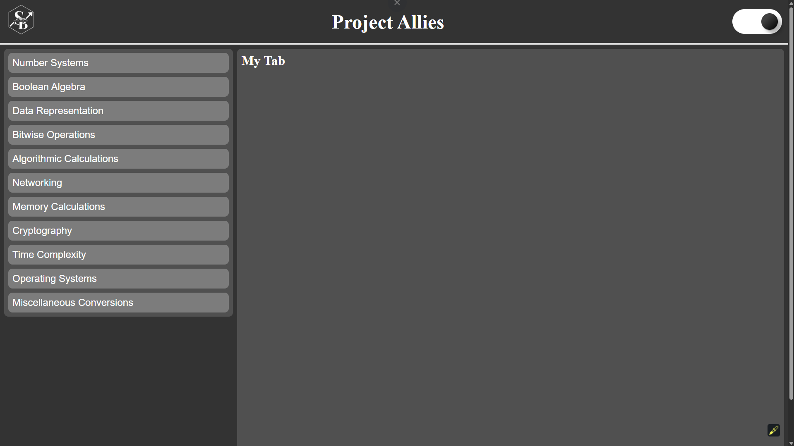
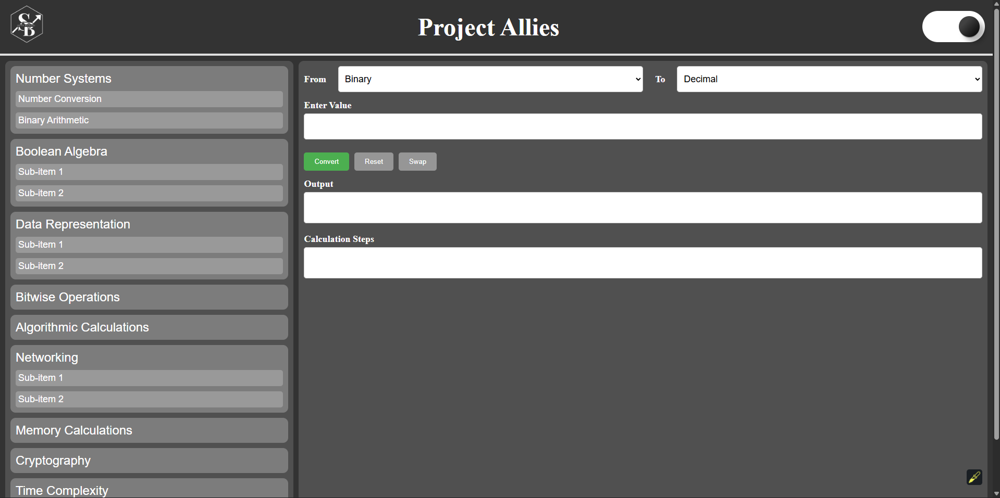

The full Project Allies is a React + TypeScript web app I built as an
all-in-one resource for CS students.
It combines multiple small utilities into a single site to save time during coursework.
Main Features
📠Number Conversion: binary, decimal, octal, hex, and ASCII.
📊 Data Representation: understand how information is stored.
🔑 Cryptography Helpers: basic ciphers and conversions.
⚡ Time Complexity Tools: practice analyzing algorithms.
App Screenshots

Home view with category list and dark mode toggle.

Number systems converter (binary, decimal, octal, hex, ASCII).
Binary arithmetic & bitwise operations.
Why I Built It
As a CS major, I often needed quick access to small tools (like converting between
number systems or checking binary math). Instead of searching for different sites,
I created a single “ally” that bundles them together in a clear interface.
Technology Stack
Technology
Use
React
Component-based UI structure
TypeScript
Type safety and cleaner code
CSS
Light & dark mode styling
React Router
Navigation between tools
Future Plans
I want to expand Project Allies with:
Networking calculators (IP subnetting, port references)
More detailed algorithm visualization
Better explanations alongside each tool
“Build tools that you yourself want to use — others will find them useful too.”
— Maker’s Principle